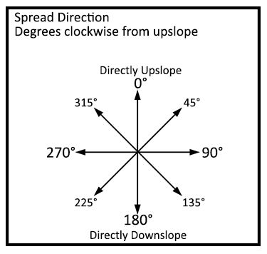

|
Surface Fire Spread Direction |
Surface spread direction is the direction in which the surface fire rate of spread is calculated. Spread direction from fire perimeter or from ignition point can be specified with respect to upslope or to north, depending on the selected input option. If the surface fire spread direction option is specified as HEADING only, FLANKING only, or BACKING only, an input value for spread direction is not needed.
For more information on fire spread direction options, see Fire Spread Directions.
| I/O |
Module |
If |
Notes |
| Input |
SURFACE |
If Surface fire spread is Directions from Fire Perimeter or Directions from Ignition Point is selected as an input option. |
|
| Output |
None |
|
|
|  |
 |
See Also
Links
BehavePlus Online Documentation, July 26, 2017.